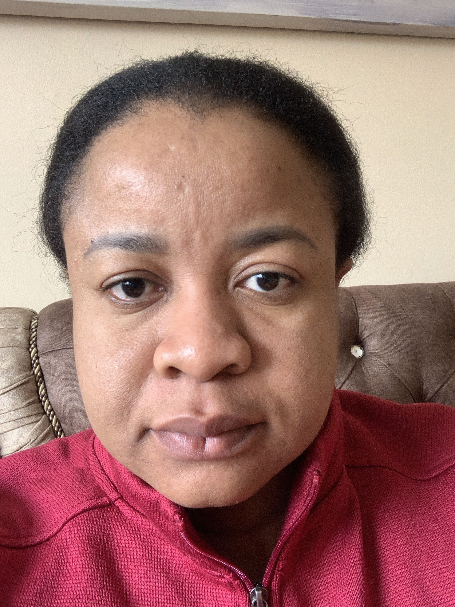
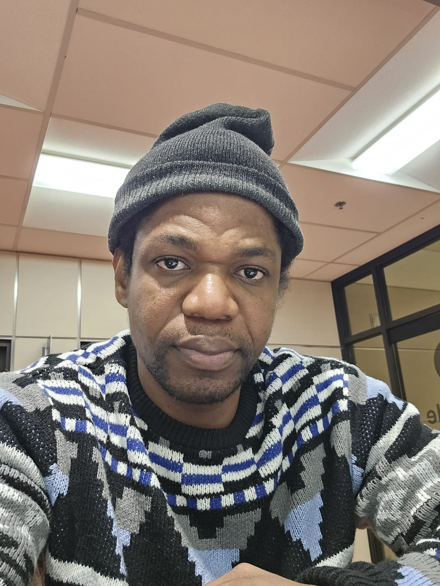

⏰
Rappels intelligents
Notifications pour les médicaments, les rendez-vous médicaux et les routines quotidiennes.
Sérénité Aînés est un projet entrepreneurial développé dans le cadre du cours ADM1082. Il vise à proposer une solution numérique innovante pour améliorer l’autonomie, la sécurité et le bien-être des personnes âgées vivant à domicile en attente d’une place en résidence.
Notre projet consiste à développer une application mobile destinée aux personnes âgées vivant à domicile et en attente d’une place en résidence, afin de favoriser leur autonomie, leur sécurité et leur bien-être au quotidien.
Notifications pour les médicaments, les rendez-vous médicaux et les routines quotidiennes.
Bouton d’urgence simple d’accès pour contacter rapidement un proche ou obtenir de l’aide.
Un espace famille pour améliorer le suivi à distance et rassurer les proches aidants.
Une solution simple pour aider les aînés à demeurer autonomes le plus longtemps possible.
Plusieurs personnes âgées doivent rester à domicile pendant une longue période avant d’obtenir une place en résidence. Durant cette attente, elles peuvent vivre de l’isolement, oublier leurs médicaments ou manquer d’un soutien structuré.
Nous proposons une application mobile accessible et intuitive qui centralise les rappels, la sécurité, la communication avec les proches et le suivi quotidien dans un seul outil numérique.
Ce qui rend notre projet pertinent, humain et distinctif.
Analyse du macro-environnement influençant le développement du projet.
Les politiques publiques favorisent le maintien à domicile et l’innovation en santé numérique.
Le vieillissement de la population augmente les besoins, mais impose un modèle abordable.
Les aînés souhaitent conserver leur autonomie et rester à domicile le plus longtemps possible.
Les progrès en télésanté, applications mobiles et suivi à distance rendent la solution réaliste.
Le numérique réduit certains déplacements et contribue indirectement à une meilleure efficacité.
La protection des renseignements personnels, notamment la Loi 25, est un enjeu essentiel.
Une lecture visuelle du microenvironnement concurrentiel du projet.
Applications de santé, télésurveillance, alarmes et outils de suivi des aînés.
Le développement d’applications est accessible, mais la confiance et les partenariats restent des barrières.
Les aînés, proches aidants et organisations peuvent comparer plusieurs solutions alternatives.
Les développeurs et fournisseurs cloud sont nombreux, ce qui limite leur pouvoir de négociation.
Aide à domicile, systèmes d’alarme, surveillance familiale et intervenants sociaux.
Un aperçu visuel de l’interface pensée pour les personnes âgées et leurs proches.
Cette maquette illustre l’expérience simple et rassurante que l’application souhaite offrir : accès rapide aux médicaments, aux rendez-vous, au lien familial et au bouton d’urgence.
Voici votre suivi de la journée.
Prise de médicament à 14h00
Cette section résume la logique entrepreneuriale du projet en mettant en évidence le besoin identifié, la réponse proposée et les retombées attendues.
De nombreuses personnes âgées doivent rester à domicile pendant une longue période avant d’obtenir une place en résidence ou en CHSLD. Durant cette attente, elles peuvent vivre de l’isolement, oublier leurs médicaments, manquer leurs rendez-vous et ressentir un sentiment d’insécurité.
Sérénité Aînés propose une application mobile simple et accessible qui regroupe les rappels de médicaments, la gestion des rendez-vous, la communication avec les proches et un bouton d’urgence dans une seule interface adaptée aux aînés.
Le projet vise à améliorer la qualité de vie des aînés, renforcer leur autonomie, rassurer les proches aidants et contribuer au maintien à domicile pendant la période d’attente d’hébergement.
Les membres qui présentent ce projet dans le cadre du cours ADM1082.
Baccalauréat en sciences infirmières
Membre de l’équipe projet

Baccalauréat en sciences infirmires
Membre de l’équipe projet

Baccalauréat en développement de logiciels informatiques
Membre de l’équipe projet
Baccalauréat en sciences des données
Membre de l’équipe projet
Quelques références ayant soutenu la réflexion autour du projet.